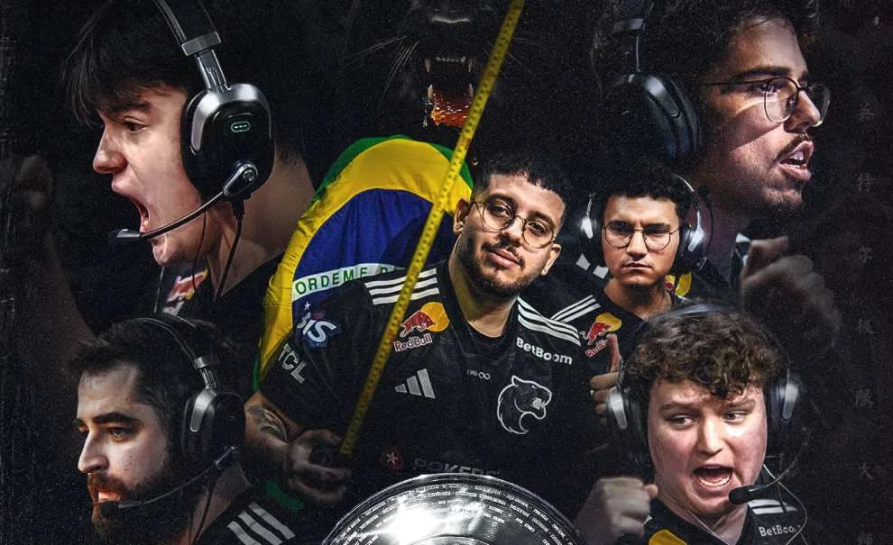
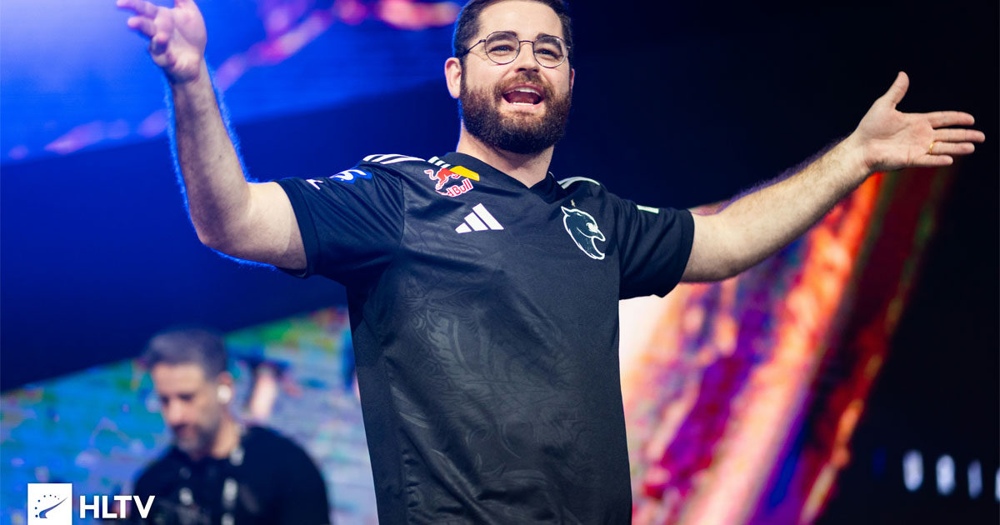

Mundo do CS
Furia Campeã do IEM Chengdu 2025

O Brasil voltou a erguer um troféu da série Intel Extreme Masters na manhã deste domingo (9), quando a FURIA desbancou o favoritismo da Vitality ao vencer os europeus por três apertados mapas a zero para conquistar a IEM Chengdu 2025.
É a primeira vez desde a IEM Sydney 2017, conquistada pela lendária SK Gaming no dia 7 de maio daquele longínquo ano, que a bandeira verde e amarela é vista no topo do pódio de um campeonato do circuito chancelado pela gigante Intel.
Em comum, as duas conquistas têm um nome mais do que místico: Gabriel "FalleN" Toledo, que se reinventou sem a AWP em mãos, mas ainda com a responsabilidade de capitanear sua equipe às maiores glórias da modalidade.
O jogo começou na Ancient, mapa que a FURIA vinha banindo e ainda não havia jogado nos últimos três meses. No cenário, os brasileiros abriram 8-4 de vantagem e fecharam em 13-11. Já na Inferno, foi vez da Vitality começar na frente, porém Gabriel "FalleN" Toledo e companhia viraram para 13-10.
A partida seguiu apertada na Overpass. Novamente, a Vitality começou melhor ao fazer 4-8 jogando de CT, mas os europeus não conseguiram manter a vantagem. A FURIA encaixou a defesa, virou o placar nos rounds finais e ganhou por 13-11.
Bandeira brasileira volta a contracenar com um troféu da série IEM | Foto:
Para o Professor, o título representa o fim de uma longa espera de exatos 3108 dias desde aquela épica conquista sobre a FaZe Clan na Austrália, bem como a consolidação de sua longevidade no mais alto nível do Counter-Strike.

Com o título conquistado, a FURIA também leva US$ 285 mil (R$ 1,5 milhão) em premiação para casa. Essa é a segunda final perdida pela Vitality no ano, enquanto a FURIA foi campeã da Thunderpick World Championship e da FISSURE Playground 2 - a última também sendo um big event.
Campeões na gringa
A FURIA conquistou seu segundo título internacional de CS2 em menos de um mês, vencendo a Natus Vincere por 3–2 na final do Thunderpick World Championship 2025
A equipe brasileira subiu para o Top 3 global no ranking da HLTV, alcançando a 3ª posição após sua sequência vitoriosa.
No entanto, nem tudo são vitórias: a FURIA foi eliminada na IEM Katowice 2025 após perder para a Astralis na fase de grupos.
Além disso, 22 organizações de CS2 — incluindo FURIA, Imperial e Legacy — assinaram uma carta aberta para a Valve pedindo melhorias no circuito competitivo, citando problemas no sistema de pontos e convites às competições.
Um torneio nacional interessante está confirmando presença no calendário: o FERJEE Rush acontecerá no Rio de Janeiro com premiação de R$ 150 mil e será válido para o ranking oficial da Valve.
Outras noticias
FURIA vence Vitality outra vez e vai direto às semifinais da BLAST Rivals Fall 2025
paiN enfrentará Passion UA por vaga nas semifinais da BLAST Rivals Fall 2025
Veja todos os adesivos de times e jogadores brasileiros no Major de Budapeste